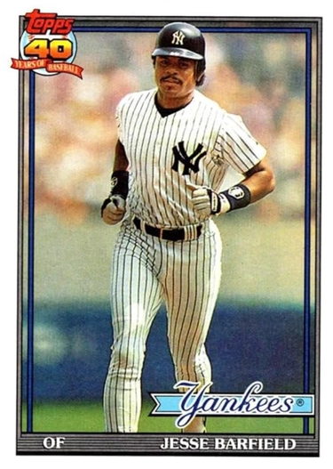

Jesse Barfield
Career Highlights & Facts
(Facts are AI-generated and may require verification)
- Led the major leagues in home runs during a single season.
- Gunned down 162 baserunners throughout a 12-year career with a powerful throwing arm.
- Became the first player in a specific club's history to record a 20-20 season.
Would you like to find out more about Jesse Barfield?
Arm and wrist strength were Jesse Barfield’s calling cards. Over 12 major-league seasons (1981-1992) with the Toronto Blue Jays and New York Yankees, the two-time Gold Glove right-fielder’s throwing arm was so powerful that he gunned down 162 baserunners. His swing produced a home run every 19.7 at-bats, including an American League-leading 40 in 1986, before a series of injuries and wrist surgeries derailed his career.
Jesse Lee Barfield was born on October 29, 1959, in Joliet, Illinois, roughly 30 miles southwest of Chicago. His mother, Annie J. Barfield, had just turned 18. “My father abandoned us and decided to marry another woman. So that’s when my mom met a man named Jesse who stepped in, and he and my mom started dating. I was actually named after him,” Barfield explained. “Everyone in my family told me that he was my dad.”
Annie eventually married another man and had three more children: Darryl, Melanie and Eric. Annie divorced around the time Jesse became a teen and worked as a seamstress to support Jesse and his three siblings. “We made a tough situation great,” Jesse said. “I owe my mom a lot of credit because we didn’t actually know we were poor, I don’t think we were, I mean, we didn’t miss any meals.”
The George Werden Buck Boys Club was Jesse’s home away from home. “It was a lifesaver for me,” he said.
He perfected his ping pong skills enough to win some events and finish second in a city tournament. Basketball, shooting pool and swimming also kept him out of trouble. Despite pressure to root for either the Cubs or White Sox, he recalled, “I had heroes on both teams.”
White Sox’ slugger
Dick Allen
was one, but
Ernie Banks
was his favorite. He watched Mr. Cub play every day on WGN-TV and imitated his batting stance. Jesse was 12 when he joined his first baseball team at the repeated prodding of his friend Rick, who urged him to try out for the Belmont Little League. He started as a shortstop and pitcher.
Jesse’s passion for the sport developed quickly. On a Boys Club trip to
Comiskey Park
when he was 13, Barfield recalled, “We used to sit up in the right-field upper deck area…I told the guys, no joke, ‘Man, one day I’m going to playing right out there. You watch.’”
They laughed.
Jesse played Pony League and Colt League ball in Ingalls Park, and made both the basketball and baseball teams at Joliet Central High School. As a junior, he ripped a game-winning double off Joliet Catholic pitcher
Bill Gullickson
.”
Since Gullickson would be the number-two overall draft pick the following year, scouts from a handful of big-league teams witnessed it, including
Bobby Mattick
–who joined the expansion Toronto Blue Jays a few months later. “Bobby liked the way Jesse swung the bat,” recalled scout
Al LaMacchia
. “The ball he hit was a double that put a hole in the wooden fence.”
After Barfield earned first team All-American honors as a senior, the Blue Jays selected him in the ninth round of the 1977 June Amateur Draft.
Toronto offered $2,500, but Barfield had other options. He’d won a statewide drafting contest and earned a scholarship to study architectural drawing at Bradley University in Peoria.
After the Blue Jays tripled their bonus offer, he signed with scout Bob Engle.
Jesse bought his mother a new Ford Thunderbird.
He debuted with Utica (New York) in the short-season, Single-A New York-Pennsylvania League in 1977. Jesse’s mom drove him to the Rawlings Adirondack factory 35 miles away in Dolgeville and loaded him up with two dozen customized bats.
Barfield’s first professional homer was a game-winning, three-run shot, but he went deep only five times in 70 games and batted .226.
“The first time I saw a slider in the rookie league, I couldn’t hit it,” he recalled. “I just made a half-swing.”
That fall in the Florida Instructional League, the Blue Jays opened up his stance to help him track the ball better.”
Barfield’s first full-length season was 1978 with Dunedin in the Single-A Florida State League, where chronic losing in front of small crowds made baseball feel more like a job.
In 133 games, he produced only two home runs and a .206 batting average while striking out a league-high 125 times. “You’re not going to do well every day,” he reflected. “If you can’t accept this game the way it is, then you might as well get into something else.”
Barfield’s throwing arm was already big-league, as evidenced by his circuit-best 22 outfield assists. “I believe my fielding is what kept me in the game until I learned how to hit,” he said.
In 1979, Barfield led the Kinston (North Carolina) Eagles of the Single-A Carolina League with 37 extra-base hits and raised his average to .264 in 136 games. The Blue Jays added him to their 40-man roster. He became an offseason resident of Houston, where his mother had moved for work.
Toronto had a Double-A affiliate for the first time in 1980, and Barfield hit the first home run in the history of the Knoxville Blue Jays.
Despite missing the last three weeks with a broken thumb, he paced the Southern League team with 14 homers, 65 RBIs, and 63 runs scored in 124 contests.
Barfield healed in time for winter ball in Colombia and returned wearing a gold pendant featuring the Blue Jays logo.
“The guys give me a lot of noise over it,” he admitted. “They say, ‘What you gonna do if you get traded?’”
Billy Smith
, Toronto’s player development director, encouraged him, saying, “You’re a can’t-miss if you keep the right attitude.”
Barfield returned to Knoxville in 1981 and earned team MVP honors, batting .261 with 16 homers in 141 games.
His all-around display included professional highs in triples (13), stolen bases (25), and a league-best 23 outfield assists.
The Blue Jays were on the road when they called Barfield up to the majors. He was to join the team at Comiskey Park, where his Boys Club friends had laughed at him. “After I called my mom first, you’d better believe I got on the horn to talk to those guys,” he said.
For his debut on September 3, Barfield recalled, “I was so fresh that they had to staple my number to the uniform.
He stroked an RBI single to center against lefty
Steve Trout
in his second at-bat and stole second base after reaching first base on a fielder’s choice in the seventh inning. In the series finale on September 6, Barfield blasted his first big-league homer off
Britt Burns
. He hit safely in his first eight contests and finished the season with a .232 average and two homers in 25 games, plus lessons from hitting coach and Hall-of-Famer
Bobby Doerr
. “Bobby talked to me about picking the right pitch, swinging at strikes,” Barfield recalled.
That winter, Toronto GM
Pat Gillick
said he wanted Barfield to gain Triple-A experience in 1982.
Barfield led the Venezuelan League’s Cardenales de Lara in RBIs despite coming home early after losing 18 pounds from a virus.
He gained the weight back and more working out with a Nautilus machine.
“He’s put on 10 pounds, and it’s all muscle,” Gillick remarked in spring training. Barfield’s Grapefruit League performance convinced manager
Bobby Cox
to make him Toronto’s Opening Day right fielder. “I just like everything I’ve seen about him,” Cox explained.
“All Jesse needs is experience here. If he’s struggling with his bat, he’s still going to help you defensively.”
Sharing outfield time with lefty
Hosken Powell
, Barfield batted .268 in 46 games before hyperextending his left knee diving and sliding onto Exhibition Stadium’s artificial turf to snare a line drive on June 3. After returning 10 days later, he hit .236 in 93 appearances.
Barfield’s first homer of the season was a pinch-hit grand slam on April 24. During the final week of the season, he launched what he called “the longest hit I’ve ever had in my life” – a 450-foot blast off Minnesota’s
Jack O’Connor
.
Overall, the rookie produced 18 homers in 394 at-bats to rank second on the Blue Jays.
Barfield also enjoyed a breakthrough year off the field. Though he’d never been a heavy drinker or a smoker, he described his early career priorities as “myself, money, and women” and said, “If you called me a no-good so-and-so, we were gonna throw down.” That changed when he became a committed Christian during a Bible study at the home of pitcher
Roy Lee Jackson
. “[Jackson] seemed to have this inner peace, whether he gave up one hit or nine runs, that I’d never seen before,”
Barfield remarked. That summer, Jesse married Marla Travis, a Houstonian.
Their first child, Josh, was born that December in Venezuela, where Jesse slugged 12 homers in 44 games (including playoffs) for Lara.
“I think eight of my 12 homers there were against right-handed pitchers,” he said.
He platooned again in 1983 and kept working with hitting instructor
Cito Gaston
. “Cito was like a big brother to me,” Barfield said.
“He took me from basically a pull hitter to a guy that can drive the ball to all fields.”
Through July 21, however, Barfield was batting only .197. Jackson and centerfielder
Lloyd Moseby
encouraged him. “We kept [Barfield] up spiritually,” Moseby explained. “We didn’t even talk baseball because we knew he had all the ability.”
On July 26, Barfield went deep in each game of a doubleheader against the White Sox, including his first career opposite-field homer. “That showed me something,” he said. “I can drive the ball the other way and be successful.”
Beginning that night, Barfield batted .317 with 16 home runs in his final 56 games. Between August 29 and September 2, he went deep seven times in five days. He explained that he’d backed away from home plate slightly to give himself an extra split-second to extend his arms and drive the ball.
By connecting for 27 homers in 388 at-bats during the Blue Jays’ first-ever winning season, he earned a two-year contract. He’d produced both a better slugging percentage and OPS against righthanders, so he wanted to play every day in 1984. “You’ve got to find a spot for me,” Barfield said. “I want to be an All-Star.”
After a poor April, however, the 6-foot-1, 200-pounder wound up playing less frequently, starting fewer than half the games. Midway through a season in which Barfield batted .284 with 14 homers in 320 at-bats, Angels slugger
Reggie Jackson
said, “I’d compare Jesse Barfield to me, a guy who hits the ball a mile and strikes out a lot. The thing about Jesse, he doesn’t play enough. You’ve got to be up at that plate, learning.”
After the Blue Jays dealt outfielder
Dave Collins
and shortstop
Alfredo Griffin
to Oakland for All-Star closer
Bill Caudill
that offseason, they told Barfield that right field was his to lose. “I didn’t like the sound of that, so I’ve got to go out and win it,” he said.
On April 17, his sudden death homer against the Rangers lifted Toronto back to .500. The team moved into first place to stay during Barfield’s personal-best 16-game hitting streak in May. He finished the season batting .289 in 155 games, with 27 homers and a career-high 22 steals to become the first 20-20 player in franchise history.
The Blue Jays made the playoffs for the first time, and the local writers voted him the club’s player of the year.
Barfield went deep once and batted .280 in the ALCS against the Royals, but Toronto fell in seven games. It was to be his only postseason experience.
Though they’d started together the night of Barfield’s big-league debut, 1985 was the first year that
George Bell
, Lloyd Moseby, and Barfield were Toronto’s regular outfield trio. They soon became the AL’s top such unit. Bell, a hard-hitting Dominican, played left. Moseby, a speedy lefty, manned center. Barfield had the most power and defensive ability. “You can never play any better right field. It’s impossible,” insisted Cox.
“There is little in baseball, there is little in any sport, to match the splendid thrill of watching Jesse Barfield make a play in right field and make one of his glorious throws to catch the runner at the plate,” wrote John Slinger in the
Toronto Star
.
Barfield led all major-league outfielders with 22 assists and eight double plays in 1985.
Barfield and the Blue Jays started slowly under new manager
Jimy Williams
in 1986. “The pitchers try to find different ways to get you out,” Barfield observed. “They put you under a microscope looking for a weakness they can exploit.”
Though pitching struggles doomed Toronto to a fourth-place finish, Barfield adjusted and belted 40 home runs to lead the majors. “I’m just trying to drive the ball,” he said. “And when I do that, the homers usually come on their own.”
He played in his only All-Star Game that year at the
Houston Astrodome
, won the first of two straight Gold Gloves and edged Montreal Expos’ star
Tim Raines
to become the first Blue Jay ever honored as Canada’s Baseball Man of the Year.
That summer, Barfield received a phone call from a woman who identified herself as his grandmother. She revealed that a neighborhood man he’d known growing up named Evell Kelly was his biological father. Jesse’s mother confirmed it. “I guess for many reasons she never wanted me to know,” Barfield said. He got to know Evell, and they shared a resemblance as well as outgoing personalities, but Jesse was already 26 when he learned the truth. “A father-son relationship is something I was deprived of,” he said.
Barfield’s $1,525,000 salary for 1987 made him the highest paid non-pitcher in Blue Jays history at the time.
By June 27, Toronto boasted the majors’ best record and he had gone deep 19 times. After combining with Bell to bash 71 homers the previous year, they’d hit 75 in 1987. “[Bell] hits the crowd pleasers, high and you have time to stand and cheer,” Barfield said. “Mine just jump. Usually line drives.”
Barfield hit two-homers against the Rangers on consecutive Friday nights in early May, including a sudden-death shot off
Mitch Williams
. In June, he beat Baltimore with another walk-off. “The biggest thing about Jesse Barfield, as far as baseball, is his work habits. He does things with a purpose,” Jimy Williams noted. “He has no waste of physical or mental energy. And this is a young man just entering his prime.” Barfield often led the team’s Bible studies and chapel services. “Jesse is one of the greatest ball players I’ve ever played with,” said shortstop
Tony Fernández
. “He also has a wonderful heart, compassion.”
Though it wasn’t publicized until fall, the Blue Jays inked Barfield to a three-year, $4.2 million contract that summer.
The left wrist that Barfield had broken playing high school basketball was becoming increasingly troublesome, however. He needed seven cortisone shots to get through the 1987 season, making an estimated 20 since he turned pro. After the All-Star break, he managed only nine homers. “I couldn’t get on top of the ball,” he explained. Shortly after the Blue Jays lost their final seven contests to blow a three-and-a-half game lead and miss the playoffs, Barfield had wrist surgery to remove a bone chip and move a tendon. He also underwent an arthroscopic procedure on his left knee.
On Opening Day 1988, Barfield was in the lineup, but persistent trade rumors had him heading to New York for
Dave Winfield
. When the Yankees visited for Toronto’s home opener, Barfield and his wife hosted Winfield for dinner, lobbying him to veto the proposed deal.
Jesse and Marla’s baby, Jeremy, was due that summer, joining five-year-old Josh and three-year-old Jessica.
Barfield spent the second half of May on the disabled list with a swollen, inflamed wrist. “I messed up by trying to lift too many heavy weights,” he said. “I never let the tissue heal properly.”
In the first half, he batted only .209 with seven homers. “I was trying to mend and play,” he said.
As Toronto underperformed with a losing record into early September, trade rumors kept swirling around Barfield, including one that he started himself as a joke. “I felt like a scapegoat,” he said.
“I wasn’t even 30, and I was being written off.”
In July, he requested a deal, telling Toronto’s
Globe and Mail
, “I think the writing’s on the wall.”
Barfield’s wrist improved enough for him to produce a .500 slugging percentage in the second half.
He was still a Blue Jay to begin 1989, but Williams platooned him with rookie
Rob Ducey
three weeks into the season. Barfield belted his franchise record 179th homer on Saturday night, April 29, in Anaheim. The next day, Toronto traded him to the Yankees.
New York Vice President
Syd Thrift
said, “This should stop our opponents from pitching around
Don Mattingly
to get to somebody else.”
With Winfield out for the season following back surgery, the Blue Jays received southpaw
Al Leiter
in return. While Leiter later developed into an All-Star for the Marlins and Mets, shoulder woes prevented him from winning any games for Toronto until 1993.
“I shed some tears leaving. But I know it’s the best thing for me,” Barfield said. Unlike the previous year, he was mentally ready and had decided with his wife that it was a great opportunity.
The happiest Barfield of all was his son Josh, a big fan of Yankees left-fielder
Rickey Henderson
.
On May 17, Barfield suffered a mild concussion after crashing into the wall at the Oakland Coliseum.
He missed a week and struggled through his first two-dozen games with New York. After studying old video, he realized that he was wrapping his bat too far around his head, lengthening his swing.
Former Yankees manager
Lou Piniella
worked with him in June after noticing something about the
Sadaharu Oh
-like leg lift Barfield had adopted as a timing mechanism. “It made him turn his head off the ball,” noted Piniella.
Barfield soon found his form, going deep twice in the last game of the first half, and lifting New York’s record over .500 with a three-run, walk-off shot in the first series after the All-Star break. “I heard a lot of negatives, but I like being a Yankee,” he said. In a 21-game span from June 13 to July 4, he gunned down 10 opposing baserunners. “I don’t mean to sound cocky, but I’ve been doing that my entire career,” he told reporters.
Though the club finished in fifth place, Barfield’s defense and 18 homers in 129 games with New York convinced the club to sign him to a three-year contract worth $5.7 million.
Heading into 1990, Yankees owner
George Steinbrenner
repeatedly called Barfield, “The best right fielder we’ve ever had,” which the press interpreted as a jab at Winfield.
At Barfield’s suggestion, Steinbrenner hired four full-time batting practice pitchers to travel with the team.
Winfield became a designated hitter and left fielder until he was traded to the Angels on May 11.
On April 26, Barfield achieved a milestone at
Yankee Stadium
. After blasting his 199th career home run in his first at-bat, he was robbed the next up by a leaping grab at the left-centerfield wall by Seattle’s
Ken Griffey, Jr.
After Barfield bashed a
Randy Johnson
pitch 20 rows into the seats for his 200th homer next time up, he told Mariners catcher
Scott Bradley
, “If [Griffey] catches that one, I’m checking his urine.”
Commissioner
Fay Vincent
suspended Steinbrenner on July 30 after it was revealed that the owner had paid a gambler $40,000 to dig up dirt on Winfield.
New York went on to lose more games (95) in 1990 than any club in Yankees history.
“All the distractions really hurt us,” Barfield said. “All the news was off the field, and it was hard to concentrate on baseball.”
Nevertheless, he led the team with 25 homers and 78 RBIs in 153 games.
As he had after the 1986 season, Barfield toured Japan with a major-league All-Star team. Based on conversations there with Oakland pitcher
Dave Stewart
and his own self-analysis, Barfield adjusted his workout routine to make his upper body less bulky and more flexible.
His .291 April batting average in 1991 was the best of his career, but the Yankees continued to play losing baseball. In mid-May, he hurled a ball out of Yankee Stadium onto the nearby elevated subway tracks on River Avenue in frustration. Though Barfield’s batting average had fallen below .230 by July 13, New York had a winning record, and his defense and 17 homers prompted Yankees GM
Gene Michael
to insist, “Jesse is the best right fielder in baseball.” Barfield pulled a hamstring that night, however, and hurt the front of his left foot trying to play a few days later. Initially, the team thought it was a sprain, but it was diagnosed as a stress-type fracture that ended his season after only 84 games.
Barfield began 1992 in right field but got off to a miserable start. He was batting only .141 when he slipped in the sauna on May 23 and dislocated a bone in his left wrist. He tried to play on June 17 but reinjured himself swinging. Arthroscopic surgery on June 30 didn’t help, so Barfield underwent a radical procedure in August in which two tendons were divided and woven through a hole in his ulna bone to provide stability. Doctors weren’t sure if he’d play again.
In December, Barfield signed with the Japan Central League’s Yomiuri Giants for $1.7 million.
His 1993 teammates included Moseby and teenage rookie
Hideki Matsui
. In 104 games, Barfield batted only .215 and whiffed 127 times in 344 at-bats, but his 26 home runs earned him an invitation to spring training with the Houston Astros in 1994. “I didn’t like sushi, but I liked Japan,” he said upon arriving at camp. “I gave up a long-term contract and guaranteed money over there, which should tell you how much this means to me.”
Houston manager
Terry Collins
said, “If his hand is healthy, I think he will be our right fielder.”
It wasn’t to be, however. Barfield missed the beginning of the exhibition season with a strained groin.
Then he missed a week after an inside pitch clipped his thumb.
The Astros released him before Opening Day, and Barfield’s 12-year major league career ended with a .256 batting average and 241 home runs in 1,428 games.
In 1995, Barfield joined the Astros as a first-base coach and outfield instructor. He spent the next two years as a hitting coordinator for Texas Rangers’ minor-leaguers. In 1998 and 1999, Barfield was the Seattle Mariners’ hitting coach under manager Lou Piniella. “I was impressed with his play on the field and his comprehension for being a total package. I’m talking about helping in the clubhouse and being an example for the rest of the kids,” Piniella said. “The enthusiasm he has, the love he shows for the game, that’s something you can’t teach.”
Barfield retired to spend more time with his family. His oldest son,
Josh
, played four years in the majors as a second baseman with the Padres and Indians. Son Jeremy spent more than a decade in pro ball, peaking in Triple-A. Playing for Double-A Portland in 2017, he hit 27 homers, one of which was the first (and only one until 2021) to go over the center field wall at Hartford’s Dunkin’ Donuts Park.
In addition to appearing at fantasy camps, old-timer’s games, and baseball clinics, Barfield continues to work as a private hitting instructor and motivational speaker as of 2021. Through Sports Designs by Jesse Barfield, he creates customized furniture – desks with ballparks carved into them and lamps made out of bats, for example. He owns 21 design patents and was nominated to
Who’s Who of American Inventors
.
“I could have opened a restaurant or a sports bar like a lot of players, but I wanted to do something unique,” he said.
Since May 21, 2003, a bronze sculpture of Barfield, standing on one leg with his glove hand stretched upward, has greeted visitors to Silver Cross Field, the minor-league ballpark in Joliet, Illinois.
Acknowledgments
This article was reviewed by Paul Proia and David H. Lippman and fact checked by David Kritzler.
In addition to the sources cited in the Notes, the author also consulted
www.ancestry.com
www.baseball-reference.com
and
www.retrosheet.org
. The author is grateful for feedback and clarifications contributed by Jesse Barfield in a phone conversion on February 5, 2021.
Jesse Barfield, Twitter post, October 20, 2019,
https://twitter.
(last accessed January 25, 2021).
Barry Davis, “Jesse Barfield: Outta the Park with Barry Davis,” August 6, 2018,
https://www.youtube.com/watch?v=TQX0GEn9Ksk
(last accessed January 5, 2021).
Davis, “Jesse Barfield: Outta the Park with Barry Davis.”
Davis, “Jesse Barfield: Outta the Park with Barry Davis.”
Dave Bidini, “An Evening with Jesse Barfield,” May 5, 2015,
https://www.youtube.com/watch?v=mOB2P9pBJIQ
, (last accessed January 5, 2021).
Eddie Mata, “Jesse Barfield Where are They Now in Sports Full Interview,”
https://www.youtube.com/watch?v=kYmgT2A_6SQ&t=328s
(last accessed January 5, 2021).
Jesse Barfield, Publicity Questionnaire for William J. Weiss, February 9, 1978.
Trent Frayne, “Play at Plate Sparks Jays,”
Globe and Mail
(Toronto), September 10, 1985: S1.
Kelly Whiteside, “Sports Desk, Please,”
Sports Illustrated
, October 19, 1992: 11.
Mata, “Jesse Barfield Where are They Now in Sports Full Interview.”
Davis, “Jesse Barfield: Outta the Park with Barry Davis.”
Davis, “Jesse Barfield: Outta the Park with Barry Davis.”
Barfield, Publicity Questionnaire for William J. Weiss.
Larry Millson, “Barfield’s Lost Step Will Get Winter Attention,”
Globe and Mail
, September 4, 1982: S4.
“Florida No Rest for Jay Coaches,”
Globe and Mail
, October 25, 1977: 38.
Allen Abel, “There Was Fun in Jay Fantasy,”
Globe and Mail
, September 24, 1981: S1.
Abel, “There Was Fun in Jay Fantasy.”
Larry Milson, “Will Mo Make It? Will Barfield Do it Again?”
Globe and Mail
, February 28, 1983: S4.
Jose De Jesus Ortiz, “Barfield Sons Make Mom and Dad Proud,”
Houston Chronicle
, August 12, 2011,
https:
(last accessed January 25, 2021).
“First for Toronto,”
The Sporting News
, May 10, 1980: 39.
Paul Patton, “Blue Jays Call Up Three Farmhands,”
Globe and Mail
, September 1, 1980: S5.
Paul Patton, “Blue Jays Open Winter Season,”
Globe and Mail
, October 25, 1980: S4.
Abel, “There Was Fun in Jay Fantasy.”
Tommy George, “Barfield’s Great at Making Something Out of Nothing,”
Ottawa Citizen
, June 25, 1987: F4.
Paul Patton, “Two Minor Leaguers Join Jays in Chicago,”
Globe and Mail
, September 3, 1981: 48.
Mata, “Jesse Barfield Where are They Now in Sports Full Interview.”
Millson, “Barfield’s Lost Step Will Get Winter Attention.”
Mata, “Jesse Barfield Where are They Now in Sports Full Interview.”
James Golla, “Players Impress Blue Jays Official,”
Globe and Mail
, January 12, 1982: P44.
“Roster de Cardenales de Lara en la Temorada 1981-82,”
http://www.pelotabinaria.com.ve/beisbol/tem_equ.php?EQ=CDL&TE=1981-82
(last accessed January 25, 1982).
Neil MacCarl, “Hustling Barfield a Big Asset to Jays,”
The Sporting News
, May 3, 1982: 31.
“Jesse Barfield is Lone Rookie in Jay Lineup,”
Globe and Mail
, April 5, 1982: S3.
Larry Millson, “Jays Master Basics in Beating Red Sox,”
Globe and Mail
, April 17, 1982: S3.
Millson, “Barfield’s Lost Step Will Get Winter Attention.”
Paul Patton, “Barfield’s Long Homer Sparks Jays’ 75th Win,”
Globe and Mail
, October 1, 1982: P18.
George, “Barfield’s Great at Making Something Out of Nothing.”
Jesse Barfield’s Venezuelan statistics from
http://www.pelotabinaria.com.ve/beisbol/mostrar.php?ID=barfjes001
(last accessed January 26, 2021).
Milson, “Will Mo Make It? Will Barfield Do it Again?”
Jack O’Donnell, “Barfield Not Surprised by Firing,”
Hartford Courant
, May 16, 1989: D1.
Mata, “Jesse Barfield Where are They Now in Sports Full Interview.”
Kevin Boland, “Barfield’s Emotions Mixed after Heady Honor,”
Globe and Mail
, September 7, 1983: S3.
Neil MacCarl, “Old Lefty Hoodoo Big Threat to Jays,”
The Sporting News
, August 8, 1983: 12.
Boland, “Barfield’s Emotions Mixed after Heady Honor.”
Kevin Boland, “Barfield Eyes 40 Hrs and a Series,”
Globe and Mail
, March 1, 1984: 23.
Trent Frayne, “Reggie’s Todays Gone Tomorrow,”
Globe and Mail
, July 4, 1984: S1.
“Barfield a Regular Slugger,”
Chicago Tribune
, April 18, 1985: C2.
Nine days after Barfield achieved the feat on September 23, George Bell became the second Blue Jays player to do it. Lloyd Moseby joined the club in 1986.
John Slinger, “Creating, Reporting Then Making Waves with the News,”
Toronto Star
, December 6, 1985: A6.
Neil MacCarl, “Barfield Raises Toast, Ignores Spill,”
The Sporting News
, December 16, 1985: 47.
Slinger, “Creating, Reporting Then Making Waves with the News.”
Neil MacCarl, “Mature Barfield Reaches a Power Peak with Jays,”
The Sporting News
, July 21, 1986: 21.
Murray Malkin, “40th HR Makes Fans’ Day,”
Globe and Mail
, October 4, 1986: C5.
“Blue Jays,”
The Sporting News
, March 30,1987: 32.
Tommy George, “Jesse Barfield Shocked That Friend is Father,”
Toronto Star
, June 24, 1987: C1.
Neil MacCarl, “Blue Jays’ Boom-Boom Boys Avoid Arbitration,”
The Sporting News
, March 2, 1987: 26.
Joe Donnelly, “Jesse Barfield’s Long Trip is Ending,”
Los Angeles Times
, May 13, 1989: 1.
George, “Barfield’s Great at Making Something Out of Nothing.”
“Barfield is Not a Free Agent; He Signed Three-Year Contract,”
Baltimore Sun
, October 10, 1987: 4B.
Neil MacCarl, “Jesse Barfield Suffers Agony of De Feet,”
Toronto Star
, February 20, 1988: B9.
Marty Noble, “Barfield Thrilled by New Address,”
Newsday
(Long Island, New York), May 2, 1989: 115.
Noble, “Barfield Thrilled by New Address.”
Mike Payne, “With Spring Comes a New Start,”
St. Petersburg Times
, March 4, 1989: 1C.
Payne, “With Spring Comes a New Start.”
Jim Donaghy, “Barfield Boosts Yankees’ Hopes,”
Globe and Mail
, June 4, 1991: D12.
Larry Millson, “Barfield Has Own Season of Quiet Turmoil,”
Globe and Mail
, August 1, 1988: C5.
George Bell hit his 180th home run for the Blue Jays later in the 1989 season. As of 2021, Bell and Barfield rank sixth and seventh in Toronto’s franchise history.
“Barfield Traded to Yanks for Leiter,”
The Sporting News
, May 8, 1989: 12.
Noble, “Barfield Thrilled by New Address.”
Marty Noble, “Concussion Leaves Barfield Befuddled,”
Newsday
, May 19, 1989: 162.
Donnelly, “Jesse Barfield’s Long Trip is Ending.”
Jack O’Connell, “Starting to Hit it Off,”
Hartford Courant
, June 20, 1989: C3.
Jim Brady, “Barfield Has Smoking Gun,”
Newsday
, July 5, 1989: 93.
“Yankees,”
The Sporting News
, July 24, 1989: 23.
“Yankees,”
The Sporting News
, November 13, 1989: 52.
“Yankees and Deion: A Parting of Ways?”
The Sporting News
, March 5, 1990: 20.
Mark Herrmann, “Ken Sr.: Mine’s Better,”
Newsday
, April 27, 1990: 156.
Kevin McCoy and Richard T. Pienciak, “The Boss Gets Benched,”
Daily News
(New York, New York), July 31, 1990: 4.
As of 2020, New York’s 95 losses in 1990 are the most in franchise history since the team became known as the Yankees in 1913. They lost 103 in 1908 and 102 in 1912 when they were known as the Highlanders.
“After the Storm: Kinder, Gentler Yanks,”
The Sporting News
, March 18, 1991: 43.
Jon Heyman, “Big Start for Smaller Jesse,”
Newsday
, May 4, 1991: 99.
Filip Bondy, “Injury to Barfield Leaves Yanks with Empty Feeling,”
New York Times
, July 30, 1991: B9.
Mel Antonen, “Barfield Adjusting to Ways of Japanese Ball,”
USA Today
, April 16, 1993: 4C.
“Barfield to Play in Japan,”
New York Times
, December 3, 1992: B20.
Jerry Greene, “Astros Have Hole Without Barfield,”
Orlando Sentinel
, March 13, 1994: C12.
Neil Hohlfeld, “The Right Choice,”
The Sporting News
, January 3, 1994: 29.
Neil Hohlfeld, “Barfield on Hold,”
The Sporting News
, March 14, 1994: 21.
Reid Creager, “Big Bad John,”
The Sporting News
, March 21, 1994: 17.
John McGrath, “Barfield’s Enthusiasm Still a Big Hit in Majors,”
Globe and Mail
, February 5, 1998: S10.
Bidini, “An Evening with Jesse Barfield.”
Kelly Whiteside, “Sports Desk, Please,”
Sports Illustrated
, October 19, 1992: 11.
As of 2020, the ballpark has been renamed DuPage Medical Group Field.
Full Name
Jesse Lee Barfield
Born
October 29, 1959 at Joliet, IL (USA)
Stats
Baseball Reference
Retrosheet
Home Run Champions
Parent-Child
Career Totals
| WAR | AB | H | HR | BA | R | RBI | SB | OBP | SLG | OPS | OPS+ |
|---|---|---|---|---|---|---|---|---|---|---|---|
| 39.4 | 4759 | 1219 | 241 | .256 | 715 | 716 | 66 | .335 | .466 | .802 | 117 |
Statistics via Baseball-Reference.com
The Original Clue